STM-32 IQ Tune Flow
STM32 ISP IQ Tune 的安裝與連線流程分為硬體準備、軟體安裝以及連線啟動三個階段。以下為詳細的操作流程步驟：
第一階段：環境與硬體準備
- 在開始之前，請確保您擁有以下設備與環境：
- 適用開發板：STM32MP257F-EV1、STM32MP257F-DK 或 STM32MP215F-DK。
- 影像感測器：Sony™ IMX335 5Mpx 感測器。
- 連接線材：一條 USB Type-C (OTG) 數據線，用於連接主機與開發板。
- 網路連接：開發板需具備網際網路連線以進行軟體包安裝。
第二階段：軟體安裝步驟
- 安裝桌面應用程式 (Host PC)
- 前往 st.com 下載對應作業系統的軟體：
- Windows: 下載 STM32-IQTune-Win。
- MacOS: 下載 STM32-IQTune-Mac。
- Ubuntu (Linux): 下載 STM32-IQTune-Lin（注意：Ubuntu 版本為 .AppImage 格式，無需安裝即可直接執行）。
- 執行安裝程式，完成相關設定與依賴項配置。
- 安裝嵌入式應用程式 (Target Board)
- 啟動開發板：引導至 OpenSTLinux Starter Package 環境。
- 安裝 X-LINUX-ISP 工具：在終端機輸入指令同步儲存庫並安裝工具：
- apt-get update
- apt-get install x-linux-isp-tool
- 安裝 IQTune 軟體包：使用 ISP 工具安裝專用套件組：
- x-linux-isp -i packagegroup-x-linux-isp-iqtune
- 重啟 Demo Launcher：安裝後需重啟介面使 App 出現：
- 重啟指令執行後，IQTune App 將顯示在開發板的展示介面上。
第三階段：連線與啟動流程
- 實體連線：使用 USB 線連接主機電腦與開發板的 USB Type-C (OTG) 連接埠。
- 啟動板端程式：
- 在開發板的 Demo Launcher 中點擊啟動 STM32 ISP IQTune。
- 程式會自動啟動相機預覽並配置 USB 連線環境（啟用 ACM/UVC Gadget）。
- 啟動桌面程式：
- 在主機電腦開啟 IQTune 桌面應用程式。
- 應用程式會自動偵測 USB 連線埠，當偵測到後點擊介面上的 Connect。
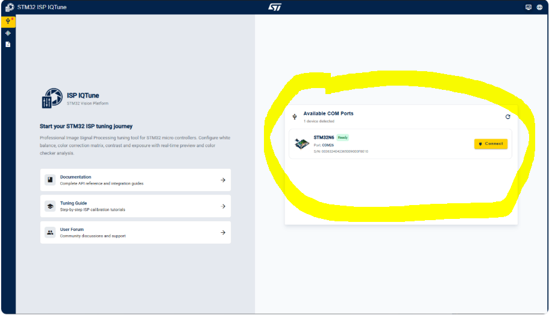
自動啟動相機預覽並配置 USB 連線環境 - 開始調整：
- 連線成功後，主機端的 Live Feedback 面板將同步顯示影像。
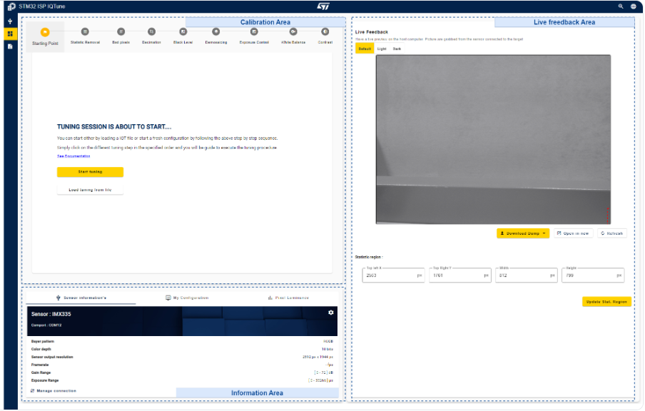
主機端的 Live Feedback 面板將同步顯示影像 - 點擊 Start tuning from scratch 即可開始影像感測器的校準流程。
重要提示：在 STM32MP25xx 系列上啟動 IQTune 時，系統會自動停用原本的 USB 乙太網路功能，轉而啟用序列通訊與 UVC 影像串流功能。
STM32 ISP IQTune 是一款用於調整嵌入式 ISP（影像訊號處理器）的影像品質調整工具，其可調整的參數以及安裝方式說明如下：
IQTune Tool 可調整的影像參數
- 該工具主要針對 RGB RAW Bayer 感測器及其鏡頭進行校準，提供的調整服務包含：
- ISP 參數調整：提供對 STM32 ISP 內多項可調參數的存取權限。
- 白平衡（White-balance）設定：可以定義白平衡 ISP 增益（gain）。
- 色彩校正：可以定義色彩校正矩陣（Color Correction Matrix）。
- 品質分析指標：提供關於色彩準確度（Color Accuracy）的相關資訊與指標，協助使用者在不同光照條件下優化配置。
根據來源文件與技術指南，STM32 ISP IQTune 的調校流程遵循「由基礎硬體校正到進階色彩優化」的邏輯順序。以下為您依序整理的 9 個主要步驟及其調整項目：
第一階段：基礎像素校正 (Initial Calibration)
這部分的目的是確保進入處理管道的原始數據是乾淨且準確的。
Step 1: 配置統計資料移除 (Configure the statistics removal)
- 調整內容：設定感測器輸出的有效影像區域 (ROI)，決定要跳過的行數與保留的行數。
- 目的：剔除影像邊緣無用的元數據或無效像素，確保後續自動演算法 (AE/AWB) 的統計數據準確。
Step 2: 配置壞點校正 (Configure the bad pixel)
- 調整內容：調整判定壞點的閾值 (Threshold) 或濾波強度。
- 目的：偵測並修補感測器陣列中恆亮或恆暗的異常像素點。
Step 3: 配置黑位校正 (Configure the black level)
- 調整內容：在全黑環境下測量並減去 R、G、B 分量的偏移值 (Offset)。
- 目的：確保影像在全黑時數值為 0，消除感測器的黑位偏移。
第二階段：格式轉換與亮度優化 (Format & Luminance)
將 RAW 數據轉為 RGB 影像並調整亮度特性。
Step 4: 配置去馬賽克 (Configure the demosaicing)
- 調整內容：針對邊緣、水平線、垂直線及孤立像素調整自適應濾波器強度 (0-7)。
- 目的：將 RAW Bayer 格式轉換為 RGB888 彩色影像。
Step 5: 配置伽瑪校正 (Configure the gamma correction)
- 調整內容：啟用並套用靜態指數為 2.2 的伽瑪壓縮曲線。
- 目的：使影像亮度分布符合人類視覺感官與標準顯示器 (sRGB) 的特性。
第三階段：色彩與自動化控制 (Color & 3A Control)
這是調校流程中最核心的色彩還原階段。
Step 6: 配置曝光控制 (Configure the exposure control)
- 調整內容：啟用自動曝光演算法，設定曝光補償 (EV) 與感測器延遲參數。
- 目的：確保影像在不同光照下亮度適中，不過暗或過曝。
Step 7: 配置自動白平衡 (AWB) 設定檔 此步驟包含多個子項，需針對不同光源重複執行：
- 7.1 準備設定檔：建立針對特定色溫光源的設定檔 (最多支援 5 種)。
- 7.2 調整 ISP 增益：計算並設定 R、G、B 增益，確保「白色看起來是白色」。
- 7.3 調整色彩校正矩陣 (CCM)：透過分析工具獲取 3x3 矩陣係數。
- 7.4 驗證色彩準確度：檢查 DeltaC00 指標以評估色彩還原品質。
- 7.5 啟用 AWB 演算法：選定設定檔並啟動自動切換邏輯。
最後階段：後處理與匯出 (Post-processing & Export)
Step 8: 配置對比度 (Configure the contrast - 選用)
- 調整內容：選擇預設配置或手動微調亮度查找表 (LUT)。
- 目的：透過非線性方式加強亮度，提升視覺對比效果。
Step 9: 匯出 ISP 配置 (Export the ISP configuration)
- 調整內容：根據專案類型匯出為 .yaml (Linux) 或 .h (裸機 MCU) 檔案。
- 目的：將所有調校好的參數應用到實際應用程式中。
IQ tune 調整步驟與流程說明
Step 1: 配置統計資料移除 (Configure the statistics removal)
在 STM32 ISP IQTune 的調校流程中，配置統計資料移除 (Configure the statistics removal) 是整個影像處理管道（Pipeline）的第一步，旨在確保進入後續處理的影像數據不包含無用的非影像資訊。
以下是詳細的操作步驟與說明：
1. 目的與原理
- 目的：此模組負責在開始去馬賽克（Demosaicing）轉換之前，移除由感測器插入的潛在統計數據或無效像素。
- 適用對象：平行介面感測器：通常需要此步驟，因為這類感測器無法區分影像統計資料與實際像素數據。
- CSI-2 感測器：通常會使用不同的虛擬通道 ID（Virtual channel IDs）來分離這些數據流，因此在此步驟中通常是停用的（例如 IMX335 範例中即為停用狀態）。
- 運作原理：透過定義「跳過行數」與「保留行數」，篩選出真正的有效影像區域（ROI），以避免干擾後續自動曝光（AE）或自動白平衡（AWB）演算法的數據收集。
2. 桌面應用程式的操作步驟
- 請在 IQTune 介面的 "Statistic Removal" 面板中執行以下操作：
- 啟用/停用模組：根據感測器類型，選擇開啟或關閉統計資料移除功能（Enable or disable）。
- 配置行數參數：First lines to skip（首先跳過的行數）：設定從頂部開始要忽略多少行包含元數據（Metadata）的無效像素。
- Number of lines to keep（保留的行數）：設定要保留並納入處理的有效影像行數。
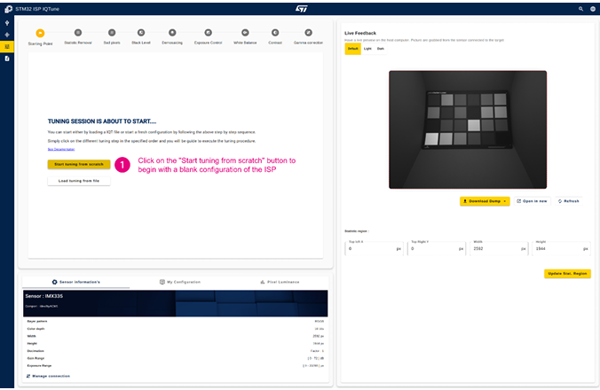
從零開始設定網際網路服務 (ISP)
註：具體數值應參考感測器的數據表（Datasheet）。
- 套用設定：點擊 "Apply" 按鈕將配置寫入硬體。
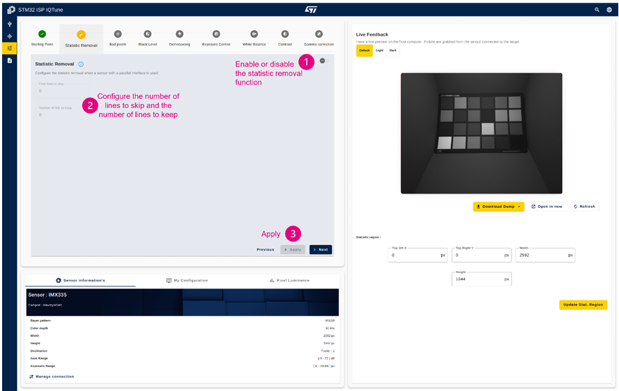
點擊 "Apply" 按鈕將參數寫入硬體
3. 重要注意事項（Linux 生態系統）
如果您使用的是 Linux 生態系統，請注意以下差異：
- 功能限制：在 Linux 環境下，統計資料移除功能 不透過 IQTune 桌面應用程式公開。
- 指令控制：需透過 ISP subdev 的 crop 屬性來手動管理。
- 範例指令： media-ctl -d $media_dev --set-v4l2 "'dcmipp_main_isp':0[crop:(0,5)/1280x713]"。
4. 調校小提示
- 對齊 Bayer 格式：在手動調整位移（Offset）時，建議以 2 的倍數（雙數） 為單位，以避免破壞感測器原始的 Bayer 排列（如 RGGB）規律。
- 不要縮得太小：雖然此步驟是為了剔除無效像素，但不建議將範圍縮得比實際有效畫面小太多，否則會導致 ISP 收集到的樣本數不足，影響後續 AWB 的準確度。
- 完成此步驟後，影像區域已被正確界定。
Step 2: 配置壞點校正（Configure the bad pixel）
在 STM32 ISP IQTune 的調校流程中，Step 2: Configure the bad pixel（配置壞點校正） 的主要任務是偵測並修正感測器陣列中因製造瑕疵或環境老化產生的異常像素點（如恆亮的熱點或恆暗的死點）。
以下是詳細的操作步驟與說明：
1. 運作原理
- 此模組專門處理 RAW Bayer 數據流，透過「相關性提取」而非固定位置來偵測壞點。
- 檢測方式：系統會掃描像素，並將目標像素與其左側兩個及右側兩個同顏色通道的鄰近像素進行水平連續性相關性比對。
- 判定基準：若某個像素的分量被判定為「過亮」，則會被標記為壞點；為了避免誤判，系統通常不提取「過暗」的像素。
- 修正方式：一旦判定為壞點，系統會利用其左右兩側同分量像素的水平平均值來進行替換與修補。
2. 具體操作步驟
- 請在 IQTune 桌面應用程式介面的 "Bad pixels" 面板執行以下操作：
- 啟用模組：勾選 "Enable" 以開啟壞點校正功能。
- 選擇控制模式：您可以選擇使用「軟體演算法自動調整」或「手動固定強度」。
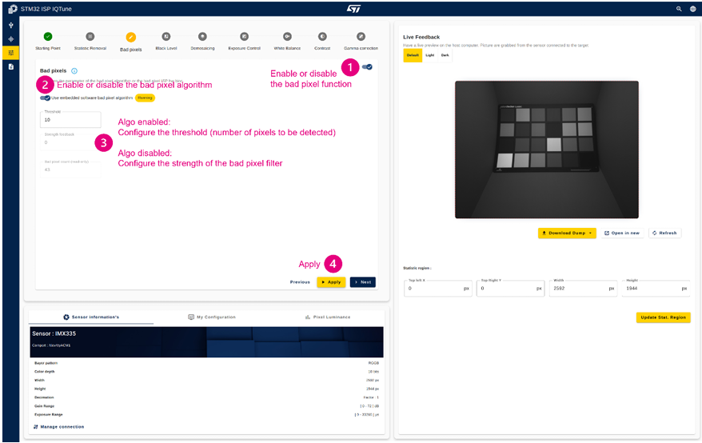
點擊 "Apply" 按鈕將參數寫入硬體
- 方法 A：使用自動軟體演算法 (建議)
- 勾選 "Use embedded software bad pixel algorithm"。
- 設定閾值 (Threshold)：輸入您預期偵測到的最大像素數量。演算法會自動動態更新硬體的「強度（Strength）」值，使偵測到的壞點數量接近此閾值。
- 方法 B：手動設定固定強度
- 停用軟體演算法。
- 調整強度 (Strength)：範圍從 0（高容忍度）至 7（激進偵測）。
- 觀察回饋數據：
- 介面會顯示一個 12 位元的計數器，即時報告每一幀中被修正的壞點數量（此計數器每幀都會重置）。
如果您使用自動演算法，介面也會顯示系統當前選用的強度值。
- 套用設定：點擊 "Apply" 按鈕將參數寫入硬體。

1. 啟用bad pixel module。 2. 啟用後，啟用或停用壞像素軟體演算法。 3. 如果啟用壞像素演算法，可以配置閾值，並獲知演算法選擇的強度以及偵測到的壞像素數量。如果停用壞像素演算法，您可以選擇固定強度，並獲知偵測到的壞像素數量。 4. 應用配置。
3. 調校小提示
高增益環境測試：壞點（尤其是熱點）在低增益時不明顯。建議蓋上鏡頭蓋並調高感測器增益（Gain），此時 Live Feedback 畫面中的亮雜點會變多，這時調整閾值或強度能最精確地濾除雜訊。
避免過度校正：如果強度設得太高或閾值太低，ISP 可能會將真實的影像細節（如細微織紋或邊緣）誤判為壞點並進行模糊處理，導致畫面細緻度下降。
何時停用：現代感測器製程優良且多內建自動校正功能，若畫面中未觀察到明顯的壞點偽影，建議直接停用此模組以節省處理資源
Step 3: Configure the black level（配置黑位校正）
在 STM32 ISP IQTune 的調校流程中，Configure the black level（配置黑位校正） 的主要目的是確保影像在全黑環境下能呈現真正的黑色（即 R=G=B=0），消除感測器產生的正向黑位偏移。
以下是詳細的操作步驟與說明：
1. 目的與原理
- 目的：當感測器在拍攝全黑畫面時，仍可能輸出非零的像素值，這被稱為黑位偏移（Black-level offset）
。此步驟透過從 R、G、B 分量中減去偏移量，來修正此現象。
- 參考資料：大多數感測器的數據表（Datasheet）會提供黑位偏移資訊，但若資訊缺失或需要確認，可透過此流程進行實測。
2. 具體操作步驟
請在 IQTune 桌面應用程式介面中依序執行以下操作：
- 啟用模組：在介面中勾選 "Enable" 以開啟黑位校正功能。
- 遮蔽感測器：將鏡頭蓋蓋上，確保感測器處於全黑狀態（此時 Live Feedback 預覽畫面應為全黑）。
- 開啟亮度面板：點擊開啟下方的 "Pixel Luminance" 面板。
- 選擇統計範圍：在面板中點擊 "Before demosaicing"，以獲取去馬賽克前（RAW 原始數據）的統計資料。
- 重新計算統計：點擊 "Recalculate stats" 按鈕。
- 獲取偏移值：觀察 "Average value of RGB & Luminance" 圖表，記錄下 R、G、B 通道的平均值。例如，在使用 IMX335 感測器的範例中，得到的數值可能為 R=12, G=12, B=12。
- 輸入數值：將測得的數值填入對應的 R、G、B 偏移設定欄位中。
- 套用設定：點擊欄位旁的 Apply 按鈕 執行套用。
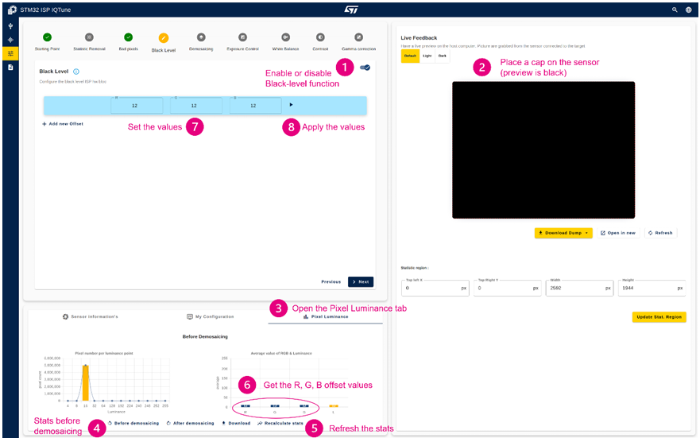
BLC 操作步驟
3. 調校小提示
- 多組測試：您可以點擊 "Add new Offset" 按鈕來建立多組不同的偏移配置進行對比測試。
- 確認生效：套用後的配置會在介面上以藍色高亮顯示，確保參數已正確寫入硬體。
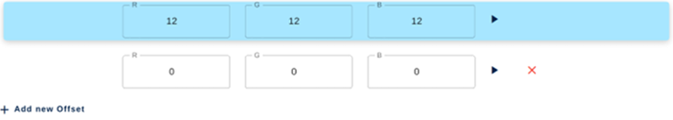
BLC 確認生效
Step 4: Configure the demosaicing（配置去馬賽克）
在 STM32 ISP IQTune 的調校流程中，Step 4: Configure the demosaicing（配置去馬賽克） 是將感測器輸出的原始數據轉化為彩色影像的關鍵轉折點。其主要任務是將 RAW Bayer 格式（8 bpp）轉換為 RGB 格式（24 bpp）。
以下是詳細的操作步驟與說明：
1. 目的與運作原理
- 目的：由於感測器每個像素只感應一種顏色（R、G 或 B），去馬賽克演算法透過計算鄰近像素的數值，補足缺失的顏色分量，生成完整的彩色影像。
- 運作原理：ISP 硬體會分析目標像素周圍 3x3 的區域，利用線性啟發式演算法（Linear Heuristics）來判斷該處最可能的顏色。
- 自適應濾波器：該模組包含可調式的濾波器，能偵測並適應影像中的邊緣（Edges）、水平線、垂直線以及孤立像素（Lone pixels），以減少轉換產生的偽影。
2. 具體操作步驟
請在 IQTune 桌面應用程式介面的 "Demosaicing" 面板執行以下操作：
- 啟用模組：勾選並開啟去馬賽克（Enable the demosaicing module）功能。
- 確認感測器資訊：介面會顯示目前的 RAW config、Bayer pattern（如 RGGB）及 Color depth（如 10 bits）。
- 這些數值是系統根據感測器驅動自動獲取的，通常不需要手動修改。如果顯示錯誤，通常表示感測器驅動配置有誤。
- 調整濾波器強度（Filter strength）：
您可以針對 Edge（邊緣）、Horizontal line（水平線）、Vertical line（垂直線）及 Lone pixel（孤立像素）分別設定強度。
- 強度範圍：從 0 至 7。其中 0 代表不進行偵測（純線性插值），1 至 7 則代表偵測強度遞增。
- 套用設定：調整完成後，點擊 "Apply" 按鈕將參數寫入硬體。
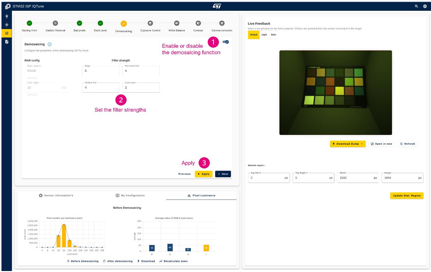
Demosaicing 操作步驟
3. 調校小提示
使用預設值：官方文件指出，預設的濾波器強度數值通常已能提供良好的影像品質，除非畫面出現明顯的交錯雜訊或邊緣模糊，否則建議維持預設。
- 觀察細節：在調整強度時，請特別觀察 Live Feedback 中物體邊緣的清晰度。強度過高可能會在邊緣產生不自然的過衝現象（Overshoot），過低則可能導致細線條斷裂。
- 完成此步驟後，您的影像將從灰階的 RAW 數據轉變為可辨識色彩的 RGB 影像
Step 5: Configure the gamma correction（配置伽瑪校正）
在 STM32 ISP IQTune 的調校流程中，Step 5: Configure the gamma correction（配置伽瑪校正） 是優化影像亮度分布與色彩還原表現的重要步驟。
以下是詳細的操作步驟與說明：
1. 目的與運作原理
- 目的：由於人類眼睛對亮度的感知是非線性的，且多數標準顯示器遵循 sRGB 規範，因此需要透過伽瑪校正來調整影像的對比度與亮度呈現。
- 運作原理：該模組會針對影像的 R、G、B 分量，套用一個靜態值為 2.2 的伽瑪指數（Gamma exponent）進行壓縮處理，以符合 sRGB 標準。
2. 具體操作步驟
- 請在 IQTune 桌面應用程式介面的 "Gamma correction" 面板執行以下操作：
- 開啟配置面板：點擊導覽列中的 "Gamma correction" 標籤。
- 啟用校正開關：在面板中點擊切換開關，將狀態設定為 "Enabled"（已啟用）。
- 確認套用範圍：此單一開關會同時控制主要用途管道（Pipe 1）與輔助用途管道（Pipe 2）的伽瑪校正參數。
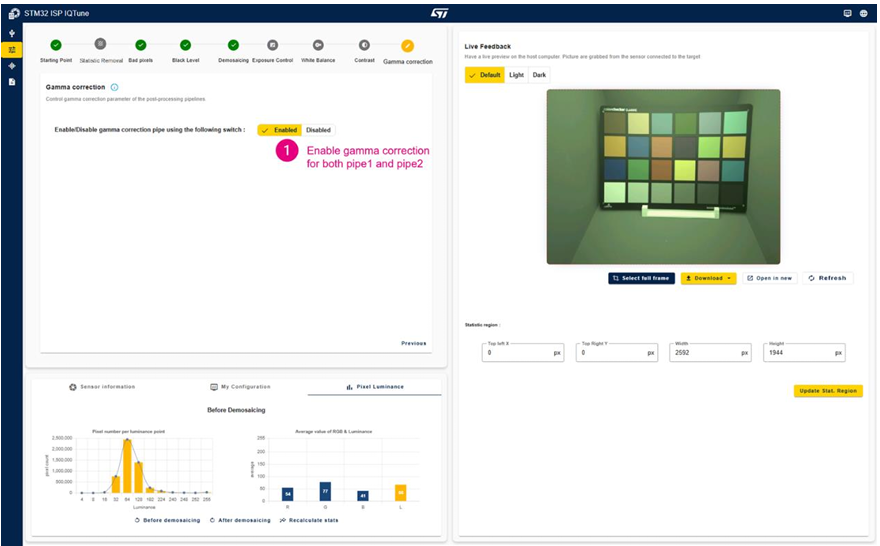
gamma 操作步驟
3. 調校小提示
色彩品質關鍵：官方技術文件指出，為了在匯出影像資料（Dumping the buffer）時獲得正確的色彩還原效果，務必確保 Pipe 1 與 Pipe 2 同時啟用伽瑪校正。
- 即時觀察：啟用此功能後，您可以透過右側的 Live Feedback 觀察到影像對比度的提升，特別是暗部與亮部的過渡會變得更加平滑且自然。
- 完成此步驟後，影像的基礎亮度分布已校正好。
Step 6: Configure the exposure control（配置曝光控制）
在 STM32 ISP IQTune 的調校流程中，Step 6: Configure the exposure control（配置曝光控制） 的核心目標是確保影像在不同光照條件下都能獲得正確的亮度，既不過暗也不會過曝。
以下是該步驟的詳細說明與操作流程：
1. 目的與運作原理
- 目的：配置感測器曝光參數，使每一幀影像都能達到理想的曝光基準。
- 非手動控制：與其他模組不同，曝光並非透過單一滑桿手動控制，而是由嵌入式自動曝光（Auto Exposure, AE）演算法來驅動。
- 調整對象：AE 演算法會根據環境亮度自動適配感測器增益（Sensor Gain）感測器曝光時間（Sensor Exposure Time）。
2. 關鍵參數說明
在 IQTune 的曝光控制面板中，有幾個重要的設定項：
- 曝光補償 (Exposure Compensation)：以曝光值 (EV) 表示。+1 EV 會使曝光目標翻倍，-1 EV 則使曝光目標減半。
- 感測器延遲 (Sensor Delay)：指感測器反映增益或曝光設定變更所需的幀數（Frames）。
- 此數值會隨感測器的幀率（Framerate）而變化。
- 抗閃爍 (Anti-flickering)：用於應對電力系統（50Hz/60Hz）造成的光源閃爍問題。
3. 具體操作步驟
請在 IQTune 桌面應用程式介面的 "Exposure Control" 面板執行以下操作：
- 啟用演算法：勾選 "Use embedded Auto Exposure Control algorithm" 以開啟自動曝光功能。
- 設定感測器延遲：如果介面顯示了感測器延遲功能，請點擊旁邊的 「魔術棒」圖示，系統將自動計算適當的延遲參數。
- 調整補償與頻率（選用）：根據需求設定 Exposure compensation 以微調目標亮度。
- 在 Anti flickering frequency 下拉選單中根據所在地區（如 50Hz 或 60Hz）進行配置。
- 套用設定：確認參數後，點擊 "Next" 進入下一步。
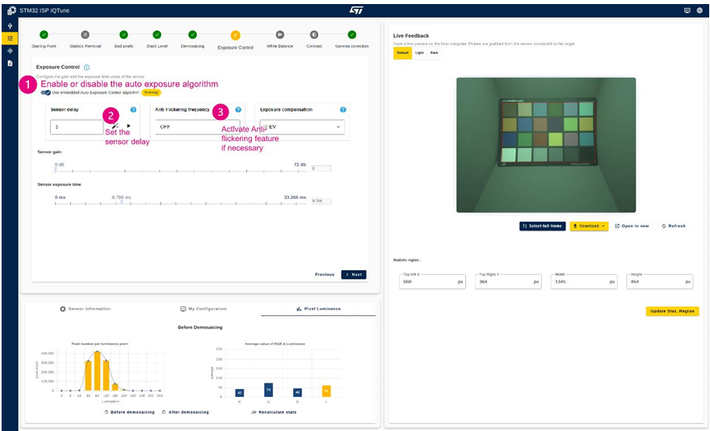
Exposure 操作步驟
4. 調校小提示
AWB 校準的基礎：自動曝光演算法在後續的自動白平衡 (AWB) 設定檔校準 過程中扮演關鍵角色，它會動態調整增益與曝光值以輔助白平衡計算。
觀察 Live Feedback：啟用 AE 後，您可以嘗試改變鏡頭對準區域的亮度（例如移動燈箱光源），並觀察右側預覽畫面是否能迅速且平滑地恢復到正常亮度。
Step 7: 配置自動白平衡 (AWB) 設定檔 此步驟包含多個子項，需針對不同光源重複執行：
Step 7-1: Configure auto white balance (AWB) profiles
在 STM32 ISP IQTune 的調校流程中，Configure auto white balance (AWB) profiles 是色彩校準的核心
。一個白平衡設定檔（Profile）是由針對特定光源的 ISP 增益（ISP gains） 與 色彩校正矩陣（CCM） 組合而成。
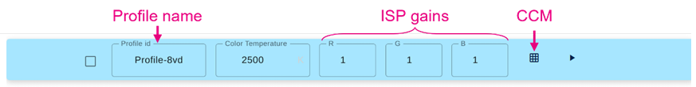
以下是Prepare your white balance profile（準備白平衡設定檔） 的詳細操作步驟：
1. 具體操作流程
- 啟用校正模組：在 IQTune 桌面應用程式的白平衡面板中，勾選並啟用 "White balance correction" 功能。
- 停用 AWB 演算法：在手動校準各個設定檔的參數時，請務必確保 AWB 演算法處於關閉狀態。
- 建立新設定檔：點擊 "Add new profile"。系統會建立一個初始狀態的設定檔，其 ISP 增益預設為 1，CCM 則為單位矩陣（Identity Matrix）。
- 命名與填寫色溫：為設定檔輸入一個易於識別的名稱（如 D65、A 或 TL84）。
- 使用 光譜儀（Spectrometer） 測量環境光源的實際色溫，並將該數值填入 "Color Temperature" 資訊框中。
- 套用設定檔：點擊該設定檔旁的 Play 按鈕 進行套用。
- 劃定統計區域 (ROI)：在 Live Feedback 預覽畫面上，點擊滑鼠並拖曳，畫出一個矩形選框。
重要：必須確保該統計選框完整覆蓋整個 ColorChecker 色卡。
您可以點擊預覽畫面上的按鈕，根據背景明暗將選框顏色更改為 Default、Light 或 Dark，以便於觀察。
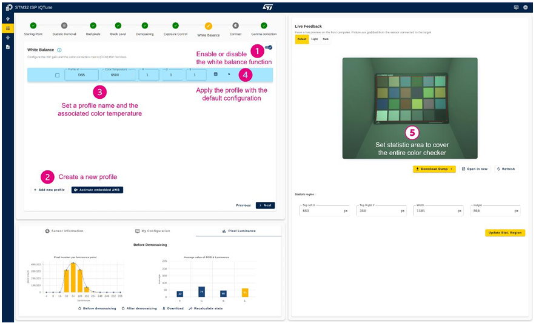
2. 調校小提示與限制
- 數量上限：系統硬體與演算法最多支援 5 種 不同的白平衡設定檔。
- 光源差異性：為了發揮 AWB 演算法的最佳效能，建議選擇色溫差異足夠大的光源（例如：同時涵蓋高色溫的日光與低色溫的室內燈光）來建立設定檔。
- 使用燈箱：建議在燈箱（Light box）中進行此操作，以提供穩定、一致且受控的照明環境，確保校準的精確度。
Step 7-2: Configure the ISP gain to ensure white appears white（配置 ISP 增益以確保白色呈現正確）
在 STM32 ISP IQTune 的調校流程中，Step 4.3.7.2: Configure the ISP gain to ensure white appears white（配置 ISP 增益以確保白色呈現正確） 的目的在於平衡 R、G、B 通道，使影像中的中性灰階色塊（如色卡上的白色塊）能正確顯示為白色。
以下是詳細的操作步驟：
1. 具體調校操作步驟
- 擷取 RAW 影像：
在 IQTune 介面中，針對當前光源拍攝一張 RAW Bayer 格式的 ColorChecker 色卡照片。
系統會將此照片儲存為 .pgm 檔案。
- 進入分析面板：點擊導覽列中的 "Analysis" 面板。
- 選擇色卡類型：
在 "Color Checker Type" 下拉選單中選擇您使用的色卡型號（例如：After November 2014）。
若使用自定義色卡，需上傳對應的 JSON 格式參考檔案。
cc24_custom_values_template.json
{ "colorCheckerName": "Custom ColorChecker", "colorCheckerPatches": [ { "patchNumber": 1, "colorName": "Dark Skin", "Lab": { "L": 37.986, "a": 13.555, "b": 14.059 } }, }, { "patchNumber": 2, "colorName": "Light Skin", "Lab": { "L": 65.711, "a": 18.13, "b": 17.81 } }, { "patchNumber": 3, "colorName": "Blue Sky", "Lab": { "L": 49.927, "a": -4.88, "b": -21.925 } { "patchNumber": 4, "colorName": "Foliage", "Lab": { "L": 43.139, "a": -13.095, "b": 21.905 } }, { }, { "patchNumber": 5, "colorName": "Blue Flower", "Lab": { "L": 55.112, "a": 8.844, "b": -25.399 } "patchNumber": 6, "colorName": "Bluish Green", "Lab": { "L": 70.719, "a": -33.397, "b": -0.199 } }, { }, { }, { "patchNumber": 7, "colorName": "Orange", "Lab": { "L": 62.661, "a": 36.067, "b": 57.096 } "patchNumber": 8, "colorName": "Purplish Blue", "Lab": { "L": 40.02, "a": 10.41, "b": -45.964 } "patchNumber": 9, "colorName": "Moderate Red", 82. "Lab": { "L": 51.124, "a": 48.239, "b": 16.248 } }, { }, { "patchNumber": 10, "colorName": "Purple", "Lab": { "L": 30.325, "a": 22.976, "b": -21.587 } "patchNumber": 11, "colorName": "Yellow Green", "Lab": { "L": 72.532, "a": -23.709, "b": 57.255 } }, { "patchNumber": 12, "colorName": "Orange Yellow", "Lab": { "L": 71.941, "a": 19.363, "b": 67.857 } }, { }, { "patchNumber": 13, "colorName": "Blue", "Lab": { "L": 28.778, "a": 14.179, "b": -50.297 } "patchNumber": 14, "colorName": "Green", "Lab": { "L": 55.261, "a": -38.342, 130. "b": 31.37 } }, { }, { }, { "patchNumber": 15, "colorName": "Red", "Lab": { "L": 42.101, "a": 53.378, "b": 28.19 } "patchNumber": 16, "colorName": "Yellow", "Lab": { "L": 81.733, "a": 4.039, "b": 79.819 } "patchNumber": 17, "colorName": "Magenta", 154. "Lab": { "L": 51.935, "a": 49.986, "b": -14.574 } }, { }, { }, "patchNumber": 18, "colorName": "Cyan", "Lab": { "L": 51.038, "a": -28.631, "b": -28.638 } "patchNumber": 19, "colorName": "White", "Lab": { "L": 96.539, "a": -0.425, "b": 1.186 } { "patchNumber": 20, "colorName": "Neutral 8", "Lab": { "L": 81.257, "a": -0.638, "b": -0.335 } }, { }, { "patchNumber": 21, "colorName": "Neutral 6.5", "Lab": { "L": 66.766, "a": -0.734, "b": -0.504 } "patchNumber": 22, "colorName": "Neutral 5", "Lab": { "L": 50.867, "a": -0.153, "b": -0.27 } - 選擇分析模式：勾選分析類型為 "White Balance Gain"。
- 上傳影像檔案：點擊上傳按鈕，選取剛剛擷取的 .pgm RAW 影像檔案。
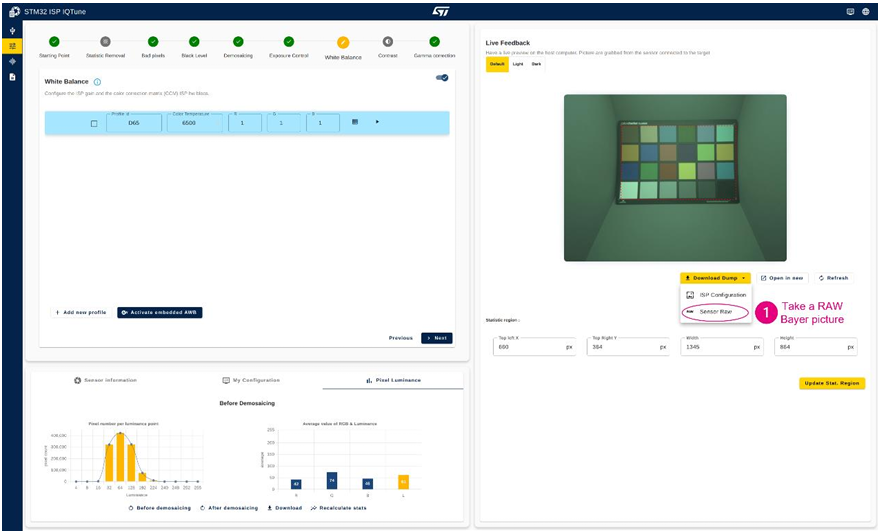
AWB 操作步驟 - 執行白平衡增益分析：
點擊 "Start" 開始分析。
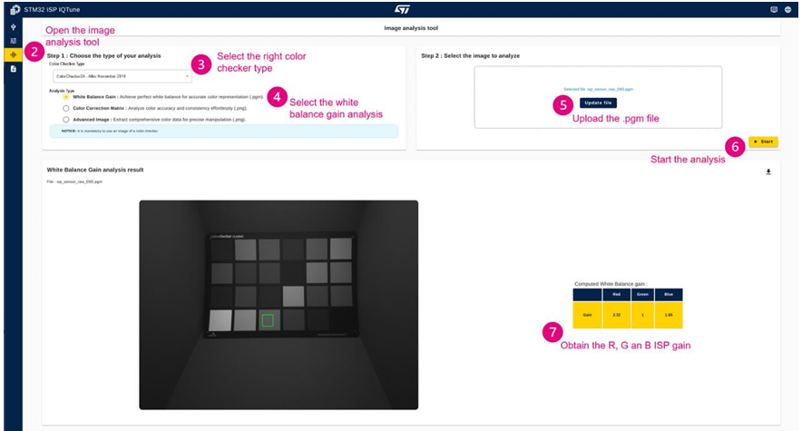
AWB 操作步驟 故障排除：若分析失敗，通常是因為影像曝光不足導致無法偵測色卡。此時需稍微調大感測器的曝光時間，並從步驟 1 重新開始。
- 獲取計算結果：分析完成後，工具會計算並顯示建議的 R、G、B ISP 增益值。
- 填入增益參數：
回到 "White Balance" 配置面板。
在您建立的設定檔（Profile）中，將分析工具計算出的 R、G、B 數值填入對應的資訊框。
- 套用設定：點擊該設定檔旁的 Apply 按鈕 (Apply)，將新的 ISP 增益寫入硬體。
- 點擊該設定檔中的 CCM 圖示開啟配置框，並將複製的係數 「貼上」 進去。
- 點擊 "Save" 後，再點擊該設定檔旁的 Play 按鈕 (Apply) 將參數寫入硬體。
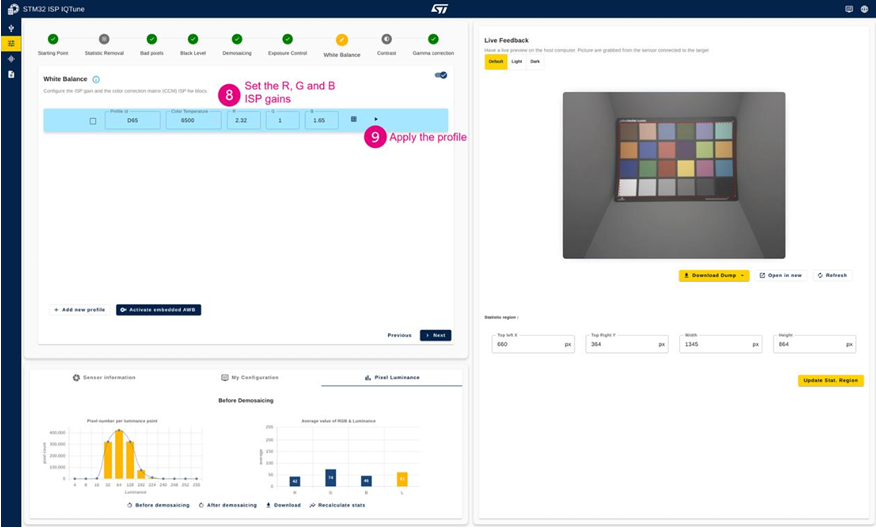
AWB 操作步驟
調校小提示
- 視覺驗證：套用增益後，請觀察右側 Live Feedback 預覽畫面。此時色卡底部的灰色與白色色塊應該看起來是純淨且中性的，不再帶有環境光的偏色（如偏黃或偏藍）。
- 後續步驟：完成此步驟並確認「白色看起來是白色」後，即可進行 Step 4.3.7.3: Configure the color correction matrix (CCM) 來進一步優化其餘色彩的還原準確度。
Step 7-3: 色彩校正矩陣 (CCM)
在 STM32 ISP IQTune 的調校流程中，色彩校正矩陣 (CCM) 的調校 緊接在白平衡增益 (ISP Gain) 設定之後，其目的是將影像從感測器的 RGB 空間轉換為標準 sRGB 空間，以確保色彩還原的準確性。
以下是 CCM 的詳細調校步驟：
1. 調校前置準備
- 在開始調校 CCM 之前，請確保您已完成以下操作：
- 確保 AWB 演算法已停用：在手動校準設定檔時，必須關閉自動白平衡演算法。
- 確認 ISP 增益已套用：已完成 Step 4.3.7.2，確保白色色塊在預覽畫面中看起來是正確的白色。
- 恢復 CCM 為單位矩陣：在進行分析前，必須確認該設定檔的 CCM 係數為 單位矩陣 (Identity Matrix)（即對角線為 1，其餘為 0）。若在非單位矩陣下進行分析，會導致最終計算出的色彩錯誤。
2. 具體調校操作步驟
- 擷取 RGB 影像：在套用了 ISP 增益的狀態下，點擊 "Download Dump" 下拉選單並選擇擷取一張 RGB 影像。
系統會將此幀儲存為一個 .png 檔案。
- 開啟分析工具：點擊導覽列中的 "Analysis" 面板。
- 選擇分析類型：在分析面板中勾選 "Color Correction Matrix" 分析選項。
- 上傳影像：點擊上傳按鈕，選取剛剛擷取的 .png RGB 影像檔案。
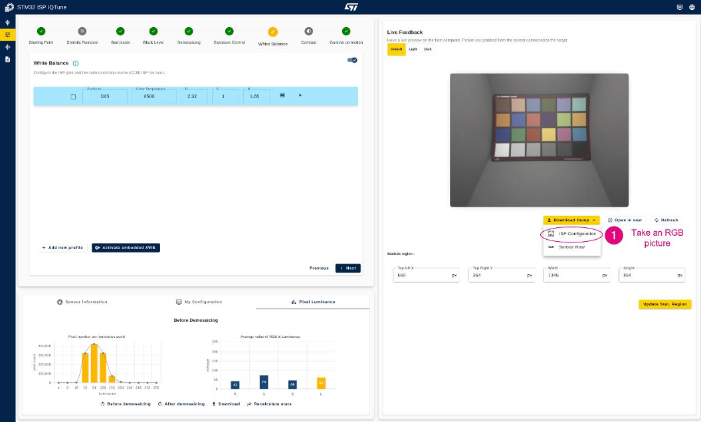
CCM 操作步驟 - 執行 CCM 分析：點擊 "Start" 開始分析。工具會根據影像中的 ColorChecker 色塊自動計算出 3x3 的補正係數。
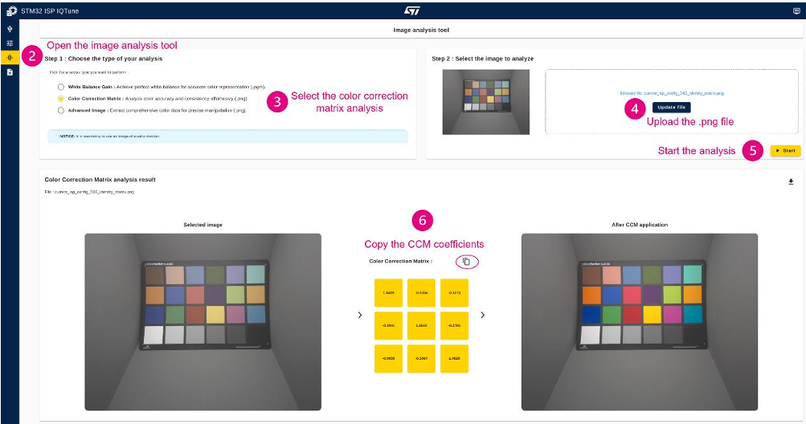
CCM 操作步驟 - 獲取係數：分析完成後，介面會顯示計算出的 CCM 係數矩陣。
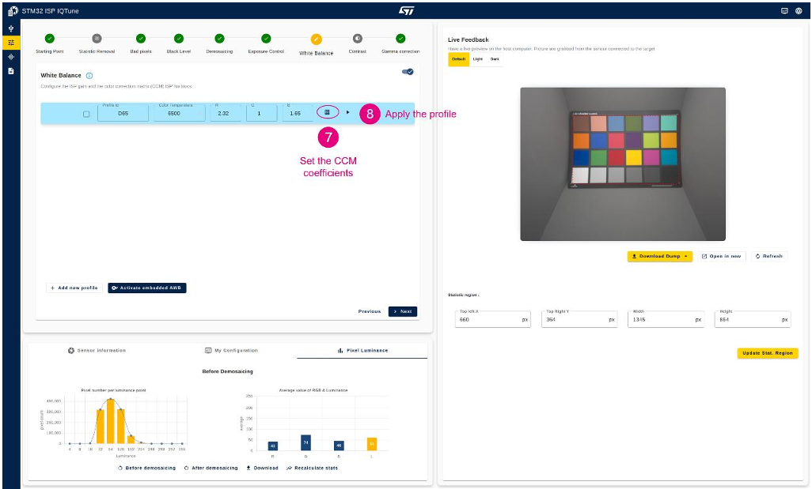
CCM 操作步驟 - 點擊係數旁的 「複製」圖示 以儲存這些數值。
- 套用參數：
- 回到 "White Balance" 配置面板。
- 點擊該設定檔中的 CCM 圖示開啟配置框，並將複製的係數 「貼上」 進去。
- 點擊 "Save" 後，再點擊該設定檔旁的 Play 按鈕 (Apply) 將參數寫入硬體。
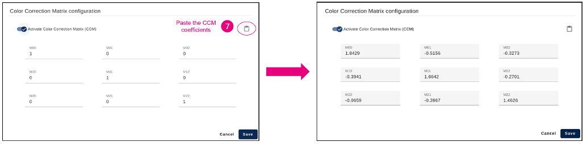
CCM 操作步驟
3. 驗證結果
- 完成上述步驟後，建議執行進階分析來確認調校品質：
- 再次擷取一張套用了新 CCM 的 .png 影像。
- 在 Analysis 面板選擇 "Advanced Image" 分析。
觀察數據：重點檢查 DeltaC00 (ΔC00) 指標。
中性灰階色塊：ΔC00 應小於 5。
彩色色塊：ΔC00 應小於 10。
重要提醒：由於 CCM 會隨光源色溫變化，您需要針對燈箱中準備的每一種不同光源（最多支援 5 種）重複執行上述白平衡增益與 CCM 的調校流程。
Step 7-4: 分析最終的ISP配置，檢查色彩準確性是否與參考顏色一致
在 STM32 ISP IQTune 的調校流程中，Step 4.3.7.4: Analyze the final ISP configuration to check color accuracy versus the reference colors 是驗證調校成果的關鍵步驟。此步驟的目的在於定量評估在特定光源下，套用了 ISP 增益（ISP Gain）與色彩校正矩陣（CCM）後的影像色彩準確度。
以下是該步驟的詳細操作方法與結果分析說明：
1. 操作步驟
- 請在 IQTune 應用程式中依序執行以下動作：
- 擷取影像：在已套用正確 ISP 增益與 CCM 的狀態下，針對當前光源拍攝一張 ColorChecker 色卡的 RGB 影像（系統會存為 .png 檔案）。
- 進入分析面板：切換至導覽列的 "Analysis" 面板。
- 選擇分析模式：勾選分析類型為 "Advanced Image"。
- 上傳影像：點擊上傳按鈕，選取剛剛拍攝的 .png 檔案。
- 執行分析：點擊 "Start" 開始進行進階影像分析。
- 檢視與驗證：分析完成後，介面會顯示多種圖表與數據供您驗證色彩準確度。
- 下載報告 (選用)：點擊下載按鈕可獲取包含圖表與數據的 .zip 壓縮檔（內含 .csv 資料）。
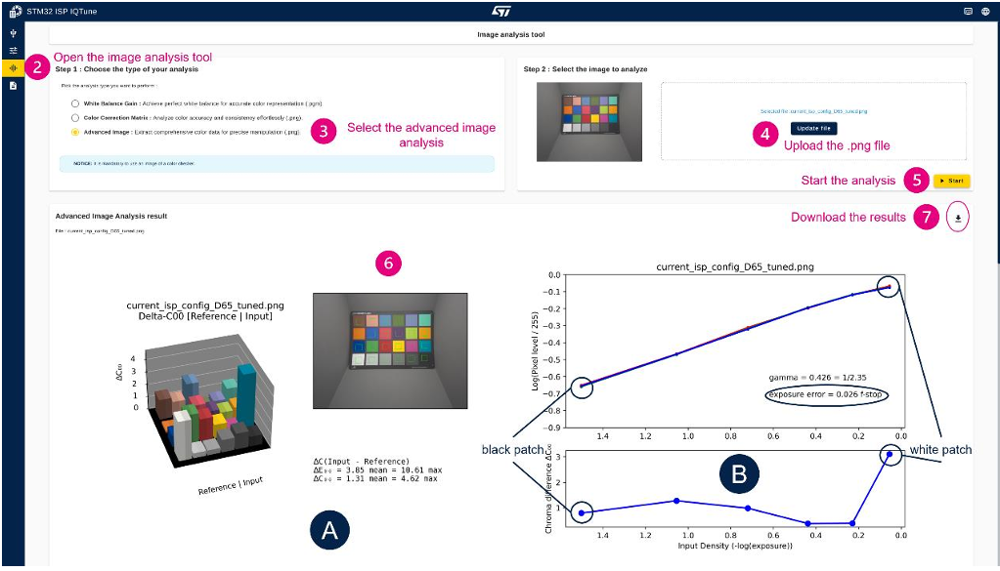
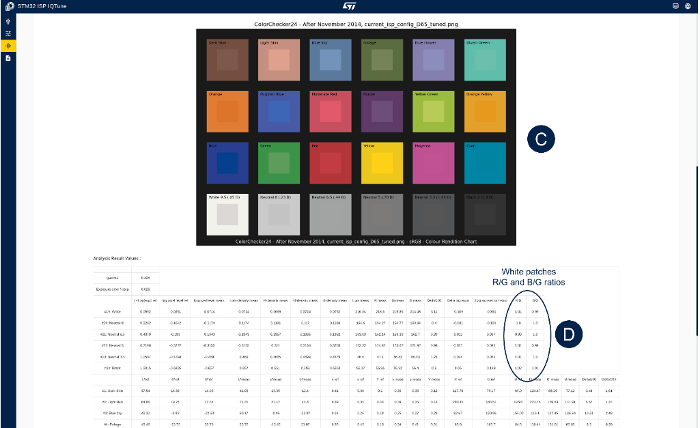
2. 關鍵指標與驗收標準 (Acceptance Criteria)
- 分析報告中最重要的指標如下，用來判斷調校是否成功：
- DeltaC00 (ΔC00)：這是最核心的驗收指標，專門測量**飽和度/色度（Chroma）**的差異，不計亮度影響。
- 中性灰階色塊：ΔC00 必須 < 5。
- 其餘彩色色塊：ΔC00 必須 < 10。
- R/G 與 B/G 比例：衡量色卡底部 6 個灰階色塊的中性程度，理想比例應接近 1:1。
- 曝光誤差 (Exposure error)：若曝光不正確，色卡的參考數值將不具準確性。
- DeltaE00 (ΔE00)：測量包含亮度、飽和度與色調在內的全方位色彩差異。此指標僅供參考，不作為主要的硬性驗收標準。
- 合格範圍：通常落在 0.9 至 1.1 之間。
- 合格範圍：必須在 ± 0.250 f-stop 以內。若誤差過大，則需重新調整 Step 6 的曝光設定並重拍影像。
3. 分析圖表說明
- 分析工具會提供以下視覺化結果幫助判斷：
- 圖表 A (3D 長條圖)：顯示每個色塊的 ΔC00 數值。長條越低代表該顏色還原越準確，同時會顯示平均與最大偏移值。
- 圖表 B (中性灰階分析)：
- 圖表 C (視覺比較)：顯示「拍攝色塊」與「標準參考色」的對比。每個大色塊代表標準色，中間的小方塊代表 ISP 處理後的實際顏色。
- 上方圖：R、G、B 分量的對數像素位準對比色塊密度。三條曲線越接近代表灰階還原越中性，此圖也會標出最終測得的 Gamma 數值。
- 下方圖：顯示各密度下的 ΔC00 變化。
Step 7-5: 啟用自動白平衡演算法
在 STM32 ISP IQTune 的調校流程中，Step 4.3.7.5: Enable the AWB algorithm（啟用自動白平衡演算法） 是完成所有光源設定檔（Profiles）校準後的最後一步。此步驟的目的是啟動嵌入式 AWB 演算法，使其根據環境光線自動在預設的設定檔之間切換。
以下是詳細的操作與步驟：
1. 操作步驟
- 根據技術指南與介面說明，請在 "White Balance" 配置面板執行以下動作：
- 選擇要納入管理的設定檔：
- 在設定檔列表左側，勾選您想要交由 AWB 演算法自動管理的設定檔（例如您先前校準好的 D65、A 或 TL84）。
- 限制：演算法最多支援同時管理 5 種 不同的白平衡設定檔。
- 啟動 AWB 演算法：
- 點擊列表下方的 "Activate embedded AWB" 按鈕。
- 此時，按鈕狀態會轉變為啟用，代表演算法已開始運行。
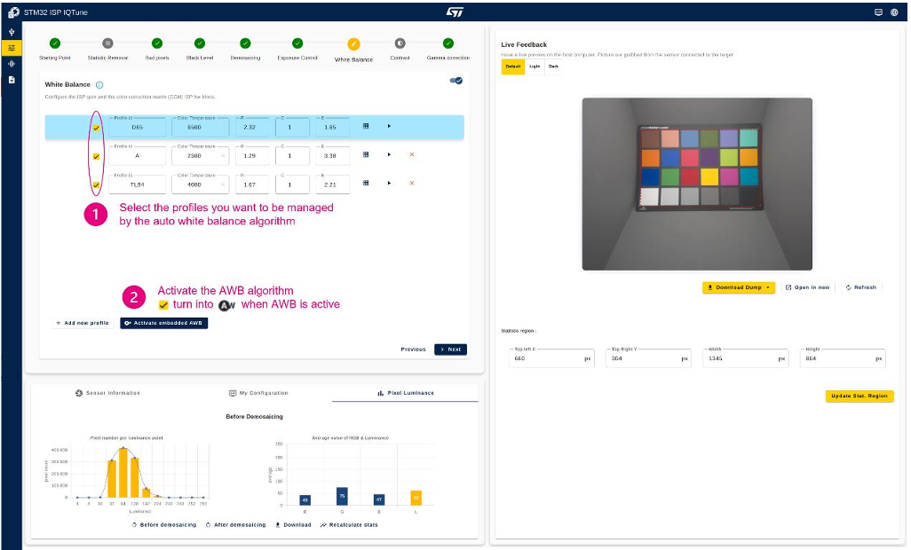
2. 狀態確認與視覺回饋
- 啟用後，您可以透過介面的變化確認演算法是否正常運作：
- 圖示變化：原本被勾選設定檔旁的黃色打勾方框，會轉變為 「AWB 標誌」。
- 當前套用提示：當 AWB 演算法正在運行時，系統目前判定並自動選用的設定檔會以 「藍色高亮（Blue highlight）」 顯示。
- 即時動態：若您改變現場光源（如在燈箱中切換光源），您應該能觀察到藍色高亮區域在不同設定檔之間跳動，代表演算法成功偵測到色溫變化並切換了參數。
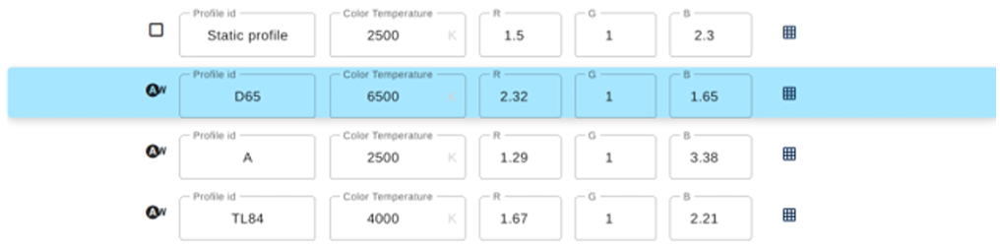
3. 調校建議
- 光源區分度：為了確保 AWB 演算法能穩定且準確地判斷環境光，建議所選定的設定檔之間應具有足夠明顯的色溫差異（例如同時包含高色溫的日光與低色溫的室內黃光）。
- 匯出配置：完成此步驟後，請務必進行 Step 9: Export the ISP configuration，將包含 AWB 演算法邏輯的配置匯出為 .yaml (Linux) 或 .h (裸機) 檔案，以便應用於最終產品。
Step 8: Configure the contrast (optional)
在 STM32 ISP IQTune 的調校流程中，Step 8: Configure the contrast (optional) 是影像處理管道（Pipeline）的最後一個環節，主要用於增強影像的對比度。
以下是該步驟的詳細說明與操作流程：
1. 目的與運作原理
- 目的：透過對像素亮度進行非線性強調，使影像的明暗對比更加鮮明，提升視覺效果。
- 運作原理：該模組會從管道中獲取 RGB 數值，計算局部像素的亮度，並根據查找表（Lookup Table, LUT）決定亮度的調整因子
- 最終輸出的 RGB 分量會被箝位（Clamped）在 8 位元範圍內。
2. 操作步驟
- 請在 IQTune 桌面應用程式的 "Contrast" 面板中執行以下操作：
- 啟用對比度模組：勾選並開啟對比度功能（Enable the contrast module）。
- 選擇預設設定檔：在下拉選單中選擇一個預設的對比度配置（例如：Contrast 1），系統會自動載入對應的曲線。
- 手動微調查找表（選用）：
如果您對預設效果不滿意，可以手動調整介面上的滑桿（如 LUM0、 LUM32 至 LUM256）。
這些滑桿對應不同亮度區段的增益，調整它們可以改變對比度曲線的走向。
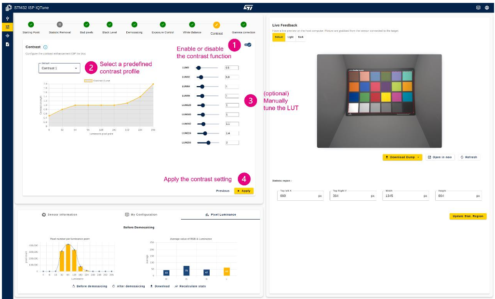
3. 調校小提示
- 選用性質：由於此步驟位於影像處理的最後階段且具有強烈的主觀視覺偏好，如果原始影像的對比度已經符合需求，您可以選擇跳過此步驟或保持預設值。
- 觀察 Live Feedback：在調整 LUT 滑桿時，建議同步觀察右側的 Live Feedback 畫面，確保亮部不會過曝（Clipping）或暗部細節丟失過多。
Step 9: Export the ISP configuration
在完成影像感測器與 ISP 的調校流程後，最後一個關鍵步驟是將配置匯出，以便將這些調校好的參數與行為應用到最終的實際應用程式中。
- 以下是 Export the ISP configuration 的操作步驟與詳細說明：
1. 操作步驟
- 請在 IQTune 桌面應用程式介面執行以下操作：
- 開啟配置面板：點擊應用程式下方的 "My Configuration" 面板（此面板會總結所有 ISP 模組的當前狀態）。
- 執行匯出：點擊 "Export Configuration" 按鈕，並根據您的專案類型選擇適合的匯出格式。
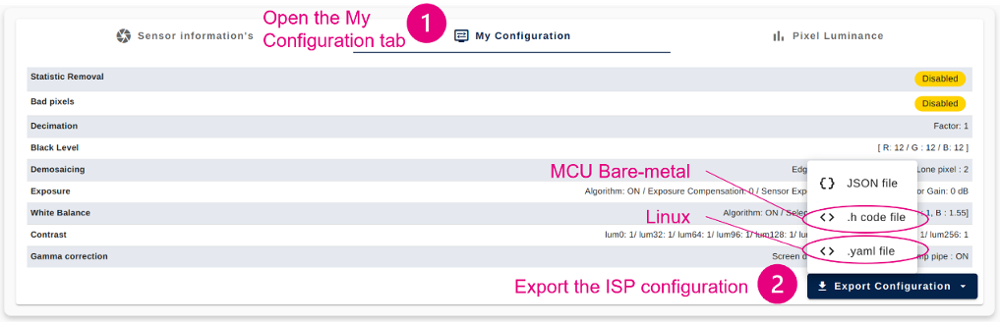
2. 不同專案類型的匯出說明
- 匯出的檔案格式取決於您的目標系統：
- Linux 專案：
- 需匯出格式：需匯出為 .yaml 檔案。
- 後續操作：將產生的 .yaml 檔案上傳至開發板的指定目錄：/usr/share/libcamera/ipa/dcmipp/。
生效原理：系統會在執行時根據偵測到的感測器名稱（例如 imx335）自動加載對應的 .yaml 檔案（例如 imx335.yaml），從而套用您所建立的 ISP 配置。
裸機（Bare-metal）MCU 專案：
匯出格式：需匯出為 .h 程式碼檔案。
後續操作：將產生的 ispparamconf.h 檔案複製到您的應用程式工程目錄中。
生效原理：編譯專案時，編譯器會將這些參數包含進去，使應用程式在啟動時能正確設定 ISP。
3. 操作小提示：儲存目前進度
除了匯出最終的應用配置外，您也可以在 "Export Configuration" 選單中選擇匯出為 JSON 檔案。
- 用途：這是用來儲存您目前的調校進度。
- 載入：日後若需再次調整，可以透過 "Load tuning from file" 功能將此 JSON 檔重新載入 IQTune 工具中繼續工作。